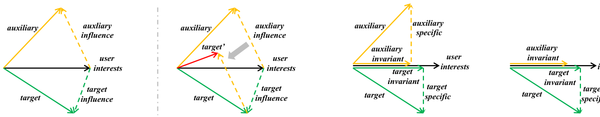

User Invariant Preference Learning for Multi-Behavior Recommendation (用户不变偏好学习用于多行为推荐)
- 会议/期刊: TOIS 2025
- 作者与机构: Mingshi Yan, Yahong Han (天津大学); Zhiyong Cheng (合肥工业大学); Fan Liu (新加坡国立大学); Yingda Lyu (吉林大学)
- 推荐链路定位: 召回（多行为用户表征学习）
- 研究方向: 多任务学习与列表级重排 / 自监督对比学习与交互去噪
- 论文原文: https://arxiv.org/abs/2507.14925v1
- 开源代码: https://github.com/MingshiYan/UIPL
TL;DR (1分钟核心速览)
多行为推荐（MBR）默认各行为共享用户偏好，却忽视了辅助行为偏好中混入的行为特异成分（季节、情绪等外部驱动），直接融合即引入噪声。本文提出 UIPL：把每个行为（及其组合）视为 IRM 的一个"环境"，用 VAE 编码-解码生成用户不变偏好，并以 IRM 损失替代标准重构损失，辅以正交损失与对比损失解耦不变/特异成分。在 Tmall/Taobao/Yelp/ML10M 四数据集、Leave-One-Out + Full-Ranking 协议下，HR@10 相对次优基线提升 1.41%–3.98%，NDCG@10 提升 2.30%–9.22%。
Background & Motivation (背景与核心矛盾)
- 主流范式: MBR 分两派——一派（MBGCN、s-MBRec）独立学各行为表征再加权融合；另一派（NMTR、CRGCN、MB-CGCN）按行为顺序做嵌入传播以建模行为间依赖。
- 前人局限: ① 加权融合与顺序传播都默认"辅助行为信息有益"，未区分共享成分与行为特异成分，辅助行为的噪声会污染目标行为预测；② 近期去噪工作（PKEF 投影解耦、MBSSL 层间对比、BCIPM 专用网络）只"缓解"噪声，未从噪声来源上建模，且 BCIPM 在冷启动场景反而失效。
- 核心洞察 (Key Insight): 用户偏好可分解为不变偏好（跨行为一致的内在兴趣）与行为特异偏好（外部因素驱动）。图 1 的玩具示例表明：辅助行为偏好向用户内在兴趣的投影与目标行为一致，故只取不变部分即可避免噪声注入。
- 本文切入点: 多行为数据天然构成多个数据分布，恰好对应 IRM 的"环境"概念——用 IRM 约束强制跨环境预测一致，从而把不变偏好"逼"出来。

Method (核心方法设计)
1. 整体框架 (Overall Architecture)
UIPL 分三段：嵌入预训练先用全部行为并集 \(\mathrm{R}^0=\mathrm{R}^1\cup\cdots\cup\mathrm{R}^M\)建全局图跑 LightGCN，得到粗粒度\(\boldsymbol{p}^{pt}_u,\boldsymbol{q}^{pt}_i\)；环境表征学习对行为集合\(\Re\)做全组合（如 3 行为生成 7 个环境）扩充环境集\(\mathcal{E}\)，每个环境各跑一次 LightGCN 得到\(\{\boldsymbol{p}^m_u\}_{m=1}^{M}\)与\(\{\boldsymbol{q}^m_i\}\)；不变偏好生成用 VAE 把每个\(\boldsymbol{p}^m_u\)编码-解码为\(\tilde{\boldsymbol{p}}^m_u\)，以 IRM 损失约束其跨环境预测能力，最终聚合\(\tilde{\boldsymbol{p}}^{agg}_u=\sum_m\tilde{\boldsymbol{p}}^m_u\)与目标行为特异偏好\(\breve{\boldsymbol{p}}^{tar}_u\) 共同打分。
flowchart TD
A["多行为交互 R^1..R^M"] --> B["嵌入预训练: 并集图 LightGCN"]
B --> C["环境增强: 行为全组合构建 E"]
C --> D["各环境 LightGCN 得 p^m_u, q^m_i"]
D --> E["VAE 编码-解码生成不变偏好 p̃^m_u"]
E --> F["IRM + 正交 + 对比 + KL 联合约束"]
F --> G["聚合 p̃^agg_u 与目标特异偏好打分"]2. 关键设计拆解 (Key Designs)
- IRM 约束替代 VAE 重构损失（核心创新）：标准 VAE 重构原输入，只会复刻含噪表征。本文将 Eq.2 的双层优化用 IRMv1 近似并落到多行为场景，令 \(\Phi_m\)为环境\(m\)学到的用户偏好、\(\psi_i\) 为跨环境共享的物品表征，得到 \(\min\sum_{m,n\in\mathcal{E},n\neq m}R_m(f(\phi^m_u,\psi_i|r^m_{ui}))+\lambda R_n(f(\phi^m_u,\psi_i|r^n_{ui}))\)即"在环境\(m\)学的偏好必须也能预测环境\(n\)的交互"。因行为内偏好重要性远高于跨行为，取\(\lambda=1\)化简为\(\min\sum_{n}\sum_{m}R(f(\phi^m_u,\psi_i|r^n_{ui}))\)。直觉：只有真正跨行为稳定的成分才能同时压低所有\(R_n\)，噪声成分被自然淘汰。
- 环境增强 + 正交/对比双辅助损失：IRM 理论表明环境越多约束越强，故对行为做全组合扩充环境集（组合等价于混合噪声、改变数据分布，但不变偏好仍可提取）。正交损失 \(\mathcal{L}_{ort}=\frac{1}{|\mathcal{U}||\mathcal{E}|}\sum_u\sum_m((\breve{\boldsymbol{p}}^m_u)^\top\tilde{\boldsymbol{p}}^m_u)^2\)强制不变与特异成分（\(\breve{\boldsymbol{p}}^m_u=\boldsymbol{p}^m_u-\tilde{\boldsymbol{p}}^m_u\)）不相关；对比损失以同用户跨环境不变偏好为正对、不变-特异为负对做 InfoNCE，强化跨环境一致性。
- 训练目标、负采样与推理效率：总损失 \(\mathcal{L}=\mathcal{L}_{rec}+\lambda\mathcal{L}_{irm}+\alpha\mathcal{L}_{ort}+\beta\mathcal{L}_{con}+\gamma\mathcal{L}_{kl}\)，其中\(\mathcal{L}_{rec}\)为目标行为上的 BPR 损失（均匀负采样），\(\mathcal{L}_{kl}\)为 VAE 标准 KL 正则。打分\(y_{ui}=(\tilde{\boldsymbol{p}}^{agg}_u)^\top\hat{\boldsymbol{q}}_i+(\breve{\boldsymbol{p}}^{tar}_u)^\top\hat{\boldsymbol{q}}_i\)，物品侧仅聚合单行为环境的\(\hat{\boldsymbol{q}}_i=\sum_{k=1}^{K}\boldsymbol{q}^k_i\) 以避免组合环境冗余。推理时环境数随行为数指数增长是主要开销来源。
Experimental Setup & Evaluation Protocol (实验设置与评估协议)
- 数据集与预处理: 仅保留每个交互的首次出现以去冗余；Yelp/ML10M 按评分切为 like（目标）/neutral/dislike 三行为。
| 数据集 | #Users | #Items | #Interactions | 稀疏度/密度 | 特征/场景说明 |
|---|---|---|---|---|---|
| Taobao | 48,749 | 39,493 | 1,953,631 | 极稀疏 | click/cart→purchase，电商 |
| Tmall | 41,738 | 11,953 | 2,292,594 | 极稀疏 | click/collect/cart→purchase，cart 极稀疏 |
| Yelp | 19,800 | 22,734 | 1,380,585 | 极稀疏 | tips/dislike/neutral→like，点评 |
| ML10M | 67,788 | 8,704 | 9,922,036 | 稀疏 | dislike/neutral→like，电影评分 |
- 数据划分与防穿越 (Splitting Strategy):
Leave-One-Out——每用户最后一条交互作测试，其余训练。 - 排名评测协议 (Ranking Protocol): 无偏
Full-Ranking，对训练集未出现的全部物品排序，报告 HR@10 与 NDCG@10。 - 对比基线与超参设置: 2 个单行为基线（MF-BPR、LightGCN）+ 7 个多行为基线（NMTR、MBGCN、S-MBRec、CRGCN、MB-GCGN、PKEF、BCIPM）；嵌入维度 \(d=64\)、batch 1024、GCN 2 层、Adam、lr\(1e{-3}\)；显著性用双尾 t 检验\(p<0.05\)。
Key Experimental Results (实验关键数据)
1. 主实验对比 (Main Results)
| 数据集 | 指标 | LightGCN | MBGCN | S-MBRec | CRGCN | MB-GCGN | PKEF | BCIPM | UIPL | Improv. |
|---|---|---|---|---|---|---|---|---|---|---|
| Tmall | HR@10 | 0.0393 | 0.0549 | 0.0694 | 0.0840 | 0.1073 | 0.1118 | 0.1414 | 0.1434* | 1.41% |
| Tmall | NDCG@10 | 0.0209 | 0.0285 | 0.0362 | 0.0442 | 0.0416 | 0.0630 | 0.0741 | 0.0790* | 6.61% |
| Taobao | HR@10 | 0.0254 | 0.0434 | 0.0571 | 0.1152 | 0.0989 | 0.1097 | 0.1292 | 0.1328* | 2.79% |
| Taobao | NDCG@10 | 0.0138 | 0.0259 | 0.0331 | 0.0629 | 0.0470 | 0.0627 | 0.0716 | 0.0782* | 9.22% |
| Yelp | HR@10 | 0.0400 | 0.0356 | 0.0353 | 0.0367 | 0.0355 | 0.0423 | 0.0502 | 0.0522* | 3.98% |
| Yelp | NDCG@10 | 0.0202 | 0.0183 | 0.0173 | 0.0178 | 0.0164 | 0.0210 | 0.0244 | 0.0254* | 4.10% |
| ML10M | HR@10 | 0.0662 | 0.0469 | 0.0340 | 0.0502 | 0.0627 | 0.0591 | 0.0810 | 0.0835* | 3.09% |
| ML10M | NDCG@10 | 0.0319 | 0.0228 | 0.0164 | 0.0239 | 0.0302 | 0.0264 | 0.0392 | 0.0401* | 2.30% |
2. 消融实验 (Ablation Study)
| 配置 | Tmall HR | Tmall NDCG | Taobao HR | Taobao NDCG | Yelp HR | Yelp NDCG | ML10M HR | ML10M NDCG |
|---|---|---|---|---|---|---|---|---|
| \(\mathcal{L}_{rec}\) only | 0.1272 | 0.0649 | 0.1203 | 0.0695 | 0.0416 | 0.0209 | 0.0534 | 0.0258 |
| w/o \(\mathcal{L}_{kl}\) | 0.1309 | 0.0685 | 0.1305 | 0.0797 | 0.0495 | 0.0240 | 0.0584 | 0.0284 |
| w/o \(\mathcal{L}_{irm}\) | 0.1311 | 0.0774 | 0.1302 | 0.0797 | 0.0508 | 0.0239 | 0.0653 | 0.0319 |
| w/o \(\mathcal{L}_{ort}\) | 0.1403 | 0.0770 | 0.1319 | 0.0802 | 0.0511 | 0.0242 | 0.0686 | 0.0340 |
| w/o \(\mathcal{L}_{con}\) | 0.1406 | 0.0773 | 0.1282 | 0.0786 | 0.0497 | 0.0238 | 0.0716 | 0.0351 |
| UIPL | 0.1434 | 0.0790 | 0.1328 | 0.0812 | 0.0532 | 0.0254 | 0.0835 | 0.0401 |
3. 关键实验发现 (Key Findings)
- IRM 损失是去噪主力：去掉 \(\mathcal{L}_{irm}\)后 ML10M HR@10 从 0.0835 跌至 0.0653（-21.8%），跌幅远超去掉正交（0.0686）或对比（0.0716）损失，说明跨环境预测约束提供的全局信号比局部嵌入约束更关键；而完全去掉整个不变偏好生成损失（\(\mathcal{L}_{rec}\) only）时 ML10M 仅 0.0534，验证"不变偏好"本身是收益来源。
- 行为相关性决定收益结构：Tmall/Taobao 行为相关性强，去掉目标特异偏好（w/o spe）优于去掉不变偏好（w/o inv），即不变偏好贡献更大；Yelp/ML10M 行为相关性弱，结论反转——这也解释了为何 Yelp/ML10M 上 NDCG 提升仅 2.30%–4.10%，而 Taobao 高达 9.22%。
- 冷启动场景优势被放大：随机抽 1000 用户清空其目标行为及辅助行为中相关交互后，UIPL 在四数据集全面领先 MBGCN/CRGCN/BCIPM；BCIPM 因只用辅助行为"训练而不取信息"，冷启动下反而失效，而 UIPL 仍可凭辅助行为学到的不变偏好给出预测。
Highlights & Limitations (亮点、对比与审稿批判)
- 与代表作对比 (vs. Prior Work): 相比 MBGCN/s-MBRec 的"加权融合"与 CRGCN/MB-CGCN 的"顺序传播"，UIPL 首次从偏好可分解性出发定义噪声来源；相比 PKEF 的投影解耦与 MBSSL 的对比去噪，UIPL 用 IRM 的跨环境风险一致性给出更强的全局约束，且不依赖目标行为交互即可工作（冷启动优势）。
- 可迁移亮点: ① "行为全组合 = 环境增强"这一零成本构造多分布的手段可直接迁移到跨域/多场景推荐；② 用 IRM 损失替换 VAE 重构损失、把生成模型改造为"生成不变成分"的思路，可复用到序列去噪与多模态对齐。
- 审稿级局限批判: ① 环境集随行为数指数膨胀（\(2^M-1\)），每环境一次 LightGCN，训练开销显著，论文未给复杂度或耗时对比；② 环境增强在 Tmall 上因 cart 行为极稀疏导致大量环境对多数用户无效，HR 提升仅 1.41%，说明该策略对行为稀疏度敏感；③ 不变/特异偏好的融合权重固定为等权相加，作者在结论中也承认二者平衡"未充分解决"。
Rating (四维评分)
- 方法创新性 (Novelty): ⭐⭐⭐⭐ （首次将 IRM 引入多行为推荐并给出偏好可分解的噪声来源分析，VAE+IRM 的组合有理论动机支撑）
- 评估协议与实验扎实度 (Protocol & Experiments): ⭐⭐⭐⭐ （四数据集 + 9 基线 + Full-Ranking + 显著性检验 + 冷启动专项，消融覆盖各损失与环境增强，但缺效率对比）
- 写作与数学规范度 (Clarity & Rigor): ⭐⭐⭐⭐ （从 Eq.2 到 Eq.7 的 IRM 落地推导链条完整，\(\lambda=1\)的化简有论证；部分符号如\(\breve{\boldsymbol{p}}\)与\(\tilde{\boldsymbol{p}}\) 易混）
- 工业落地与复现价值 (Industrial & Practical Value): ⭐⭐⭐⭐ （代码已开源，模块均为 LightGCN+MLP 易部署；但环境指数膨胀需工程裁剪，线上需评估训练成本）